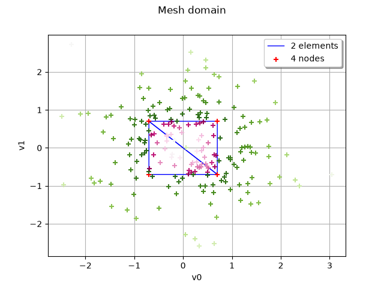
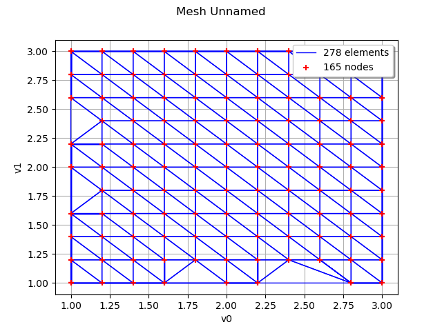

Note
Go to the end to download the full example code.
Mesh distance¶
In this example we will see how to use the mesh domain adapter to compute distance from a point to a Mesh We will also how it can be combined with LevelSetMesher to compute the intersection of meshes
import matplotlib
import openturns as ot
import openturns.viewer as otv
import otmeshing as otm
Create a mesh from an interval
dim = 2
mesh = ot.IntervalMesher([1] * dim).build(ot.Interval([-0.7] * dim, [0.7] * dim))
Create the domain adapter from the mesh
domain = otm.MeshDomain2(mesh)
Sample points and compute distances from the mesh a negative distance means the point is inside the mesh
n = 200
points = ot.Normal(dim).getSample(n)
distances = domain.computeDistance(points)
print(f"min={distances.getMin()} max={distances.getMax()}")
min=[-0.641941] max=[2.56369]
Plot the points according to the distance to the mesh
dmax = distances.getMax()[0]
cmap = matplotlib.colormaps["PiYG"]
graph = mesh.draw()
for i in range(n):
di = distances[i, 0]
if di < 0.0:
rgba = cmap(-di)
else:
rgba = cmap(1.0 - 0.5 * (di) / dmax)
cloud = ot.Cloud([points[i]])
color = ot.Drawable.ConvertFromRGBA(*rgba)
cloud.setColor(color)
graph.add(cloud)
graph.setTitle("Mesh domain")
view = otv.View(graph)

We will see that we can use the mesh distance to compute an intersection of meshes
def levelSetIntersectionMeshing(mesh1, mesh2, n=20):
"""Compute an intersection using mesh distance."""
dim = mesh1.getDimension()
min1 = mesh1.getVertices().getMin()
min2 = mesh2.getVertices().getMin()
max1 = mesh1.getVertices().getMax()
max2 = mesh2.getVertices().getMax()
minB = list(map(min, min1, min2))
maxB = list(map(max, max1, max2))
bbox = ot.Interval(minB, maxB)
domain1 = otm.MeshDomain2(mesh1)
domain2 = otm.MeshDomain2(mesh2)
def _exec(X):
d1 = domain1.computeDistance(X)
d2 = domain2.computeDistance(X)
return [max(d1, d2)]
f = ot.PythonFunction(dim, 1, _exec)
levelSet = ot.LevelSet(f, ot.LessOrEqual(), 0.0)
mesher = ot.LevelSetMesher([n] * dim)
mesh = mesher.build(levelSet, bbox, False)
return mesh
Define two intersecting square meshes
dim = 2
mesh1 = ot.IntervalMesher([1] * dim).build(ot.Interval([0.0] * dim, [3.0] * dim))
mesh2 = ot.IntervalMesher([1] * dim).build(ot.Interval([1.0] * dim, [4.0] * dim))
Compute the intersection: it should be the interval [1,3]^2
